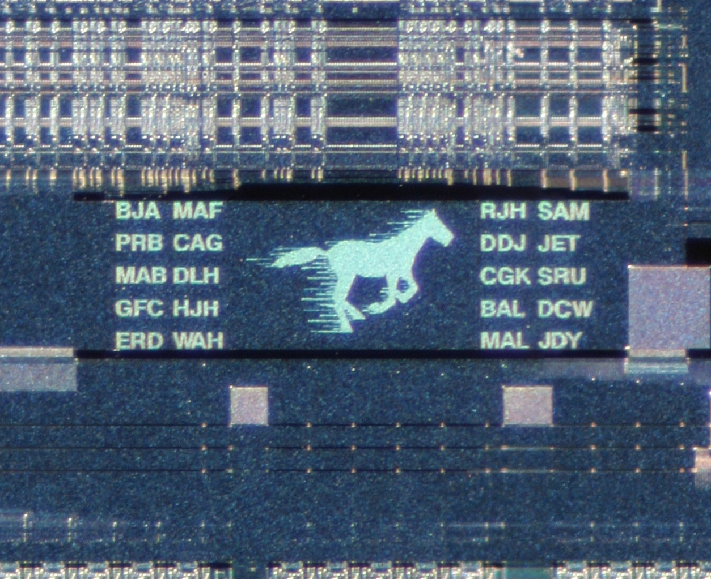

Computer Science, Networking & Cybersecurity
Comprehensive synthesis of computer fundamentals: From Babbage's Analytical Engine and the 5 hardware generations to Von Neumann architecture, cache hierarchy, universal logic gates (NAND/NOR), OSI 7-layer networking, IPv4 vs IPv6, and modern cybersecurity defense.

Evolution of Computing & Five Hardware Generations
From vacuum tubes and transistors to VLSI microprocessors and artificial intelligence
Thermionic valves; massive size, high heat generation. Machine language (binary). ENIAC, UNIVAC, EDVAC.
Invented 1947 by Shockley, Bardeen, Brattain. Magnetic core memory; Assembly language, FORTRAN, COBOL.
Jack Kilby & Robert Noyce. Small/Medium Scale Integration on silicon chip; monitors, keyboards, time-sharing OS.
Intel 4004 (1971). Very Large Scale Integration; personal computers (PCs), GUI, high-speed networks, Internet.
Ultra Large Scale Integration (ULSI); neural networks, quantum computing, parallel processing, Natural Language.
CPU Architecture & Memory Storage Hierarchy
Registers, SRAM cache, volatile DRAM vs non-volatile ROM BIOS, and byte units
The Central Processing Unit (CPU)
- Arithmetic Logic Unit (ALU): Performs all basic arithmetic (+, −, ×, ÷) and Boolean logical operations (AND, OR, NOT, comparisons).
- Control Unit (CU): The "traffic police" or coordinator of the CPU; fetches instructions from memory, decodes them, and directs data flow across buses.
- Registers: High-speed temporary memory cells located right inside the processor (Program Counter PC, Accumulator AC, Memory Address Register MAR).
Primary vs Cache Memory
Units of Digital Storage
Software Architecture & Universal Logic Gates
Compilers vs interpreters, open-source Linux, and Boolean logic gates
System Software & Language Translators
- Operating System (OS): System software interface managing computer hardware and software resources (Linux, Unix, Windows, Android).
- Compiler: Translates entire high-level program (C, C++, Java) into machine language in a single batch pass before execution; outputs an executable (.exe) file.
- Interpreter: Translates and executes high-level source code line-by-line sequentially (Python, Ruby, JavaScript); execution halts on the first encountered error.
- Assembler: Translates low-level assembly language mnemonic mnemonics (MOV, ADD) directly into binary machine code.
- Open Source: Linux kernel created by Linus Torvalds in 1991.
Digital Electronics & Universal Gates
• AND: Output is 1 only when ALL inputs are 1.
• OR: Output is 1 if ANY input is 1.
• NOT (Inverter): Inverts the input signal (1 to 0, 0 to 1).
Any basic logic gate and any complex boolean processor circuit can be fabricated exclusively using interconnected networks of either NAND or NOR gates alone.
Computer Networking, the OSI 7-Layer Model & Internet Protocols
Layered protocol stack, IPv4 vs IPv6 addressing, and port number allocations
The OSI 7-Layer Reference Model (ISO 1984)
Internet Protocols & Port Directory
• IPv4: 32-bit dotted-decimal (e.g. 192.168.1.1); ~4.3 billion addresses.
• IPv6: 128-bit hexadecimal (colon-separated); 2¹²⁸ addresses.
• MAC Address: 48-bit unique hardware identifier burned on NIC.
• DNS (Port 53): Resolves domain names to IP addresses.
• HTTP (Port 80) / HTTPS (Port 443): Web page delivery (SSL/TLS encrypted).
• SMTP (Port 25): Sending email.
• FTP (Port 20/21): File transfer.
• DHCP: Dynamic IP allocation.
*World Wide Web (WWW) was invented by Sir Tim Berners-Lee at CERN in 1989.
Cybersecurity, Malware Taxonomy & Cryptography
Classification of malware, phishing mechanics, firewalls, and public key encryption
Malware Taxonomy
- Virus: Malicious code that attaches to a legitimate host executable file; replicates only when host is run.
- Worm: Standalone malicious program that self-replicates across computer networks autonomously without requiring host file attachment.
- Trojan Horse: Harmful software that masquerades as useful, harmless software to deceive users into installation.
- Ransomware: Cryptographic malware that encrypts user files and demands ransom payment (e.g. WannaCry).
Cyber Attacks
- Phishing: Fraudulent deceptive emails or replica websites designed to trick victims into surrendering passwords and banking credentials.
- DDoS (Distributed Denial of Service): Flooding a targeted server or network with massive synthetic traffic generated by botnets to crash legitimate access.
- Spyware & Keyloggers: Secretly monitoring user activities, tracking browser history, and recording keystrokes.
Defenses & Cryptography
- Firewall: Security barrier that monitors, filters, and blocks unauthorized incoming and outgoing network traffic based on predefined rule sets.
- Symmetric Encryption: Single secret key used for both encryption and decryption (e.g. AES). Fast, but requires secure key sharing.
- Asymmetric Encryption: Uses a mathematically linked key pair: Public Key (freely distributed to encrypt) and Private Key (kept secret to decrypt, e.g. RSA).
Active Recall Flashcards
Interactive 3D flip cards covering computer generations, RAM vs ROM, universal gates, and OSI layers
High-Yield Prelims Exam Simulator
Five standard multiple-choice questions on vacuum tubes, cache SRAM, IPv4/IPv6 bits, universal gates, and worm mechanics